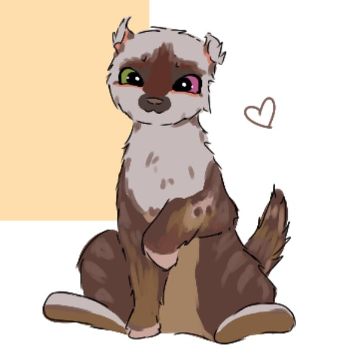
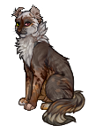
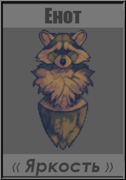
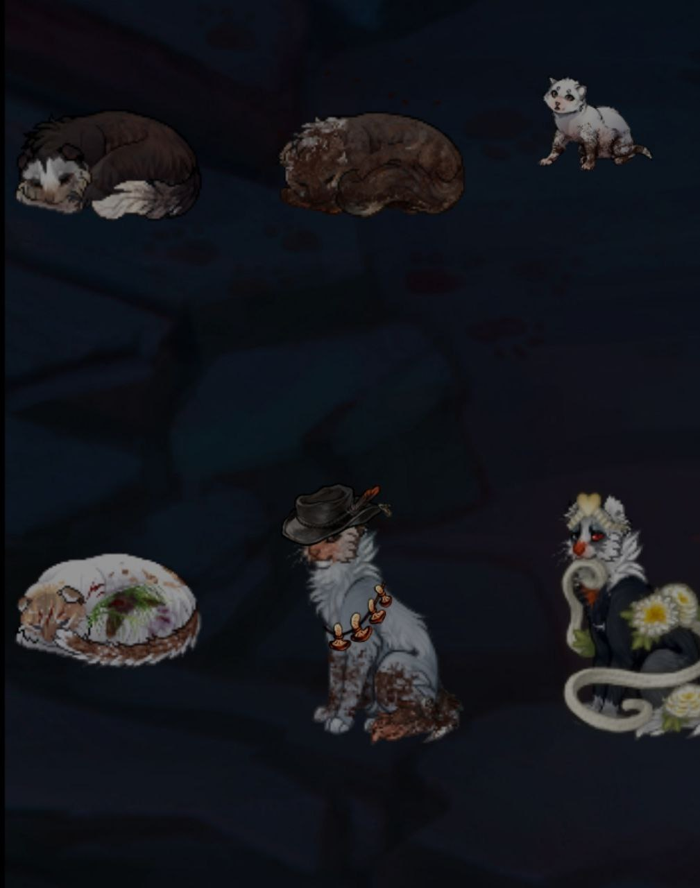
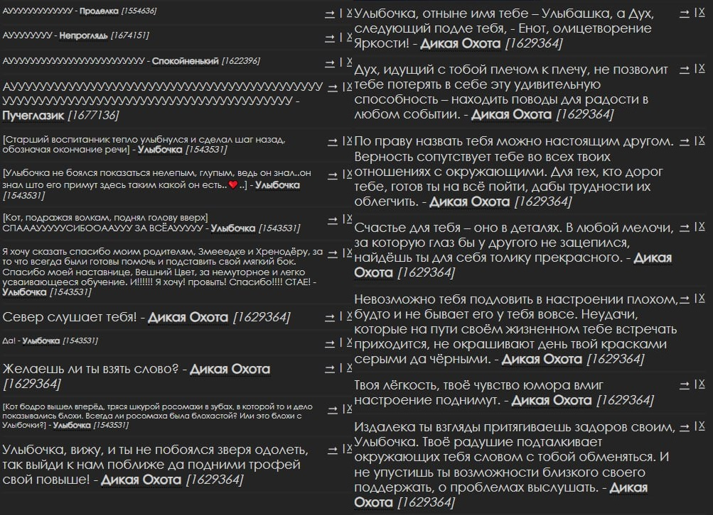
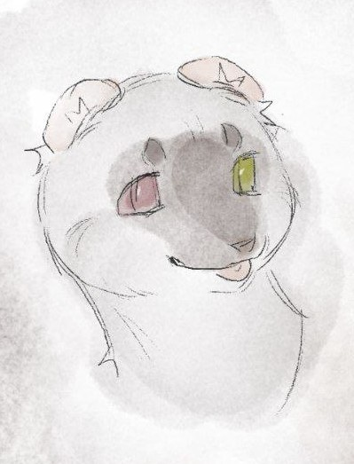
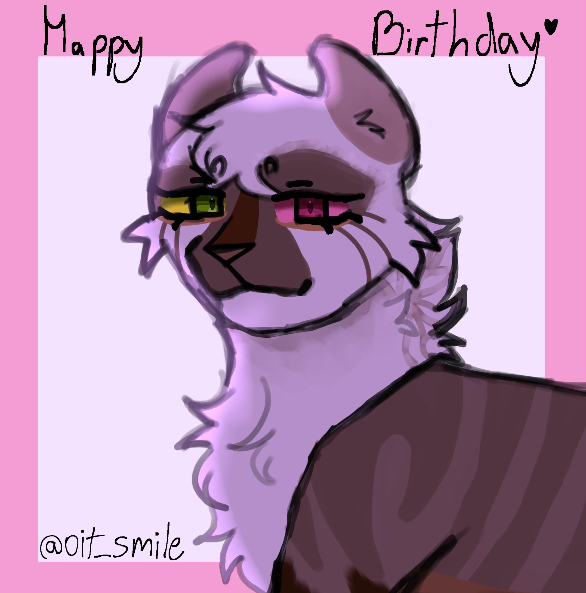
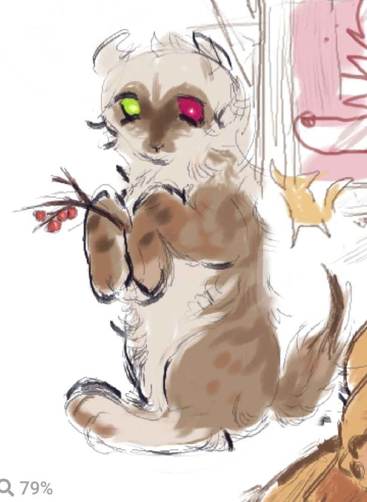

Улыбашка
Улыбочка - Улыбашка


просто МИЛЕйший котик ДОБРЕЙШЕЙ души человек кот сущность радость улыбка лучик солнца ето все про улыбочку
вам мжет показаться что это кошка или что кот кто же это на самом деле? мы и сами не знаем?! возможно небинарная личность, возможно кот с гендерной дисморфией... надуется с кем-нибудь тогда и узнаем пол..

ᛁᚾᛞᛖᛈᛖᚾᛞᛖᚾᚲᛖ
независимость
он как печенька с шоколадом такой коришневенький очень похож на хоречка!!! очень грязного хоречка вы его чистым никогда не увидите просто ЭВЕР
казалось бы ето негигиенично с таким количеством блох ходить однако чудо ето не пугает и она медитативно пересчитывает каждую блошку а сюсечка смотрид. раньше сюся его чистила как и остальных но в один момент ето стало немного бесполезно... туннель в вт все копаеца
кто есть улыбочка? улыбочка кот? да. нет. улыбочка кошка? нед.да. его путают с кошкой с самого рождения даже его собственные родители обращаюца к нему в женском роде соответственно он не видит в этом никакой ошибки. но что же когда к нему обращаются как к коту? штож его грани понимания гендерапола очень стёрты. он не понимает в чём суть обращаться к котам и кошкам поращному. он может обращаца и так и так если его не поправят. однако поправка долго не сохраняеца у него в голове.
улыбочка не видид в себе и других какието чоткие врождённые характеристики. однако он запоминает котов по их особенностям которые он замечаед в процессе. в процессе чего? в процессе игры конечно. улыбочке нравятся игры. соревнования. задания. до момента как в жизни появляеца штото што можно преобразовать в игру в его понимании он просто плывёт по течению. но он барахтается. он не может усидеть на месте и просит всех поиграть с ним. найдите предмет который я закопала и я вам дам ягодки. посчитайте сколько тут орешков и вы сможете здес пройти иначе я не дам вам етого сделат. пожалуйста. ладноесли вы не умеете считать пройдите. ладно пройдите но потом вы со мной поиграете??
улыбочка постоянно покрыт блохами. он не считает их за вредителей конечно они кусаюца и он чешеца но он их оправдывает утверждая что это не они. улыбочка териантроп его териан это блоха она хотело бы быть блохой вероятно если бы это было возможно прильнуть максимально близко к чужой пушистой щеке и пощекотать..даа улыбочке нравится близкий контакт с кем-то родственным...родственной душой...да это определённо описание подходящее для стаи. эта связь чувствуеца. она как приоьретённая но врождённая особенность. или наоборот. он не знаед.
их реакция предсказуема и безопасна он их не боица потревожить. единственное сюсе наверное бываед неприятно што блошки улыбочки хотят путешествоват и могут перекочкват на её шерстинки но етоладно…


Галерея


@raschudesnyshka

грязно по принуждению сматреть анлайн
@prodelka

